Hearth — September 10 review evidenceHearth: current UI evidence
September 10, 2026 · main at ae57f62 · actual Flutter widgets with synthetic data
These are current-state test renders, not redesign mockups or installed-phone captures. Bundled Fraunces/Source Sans/Material Icons fonts, normal shadows, and safe-area insets are included. No production or private household data was read.
Read the detailed review and plan · Click an image to see its original size.
Today — compact summary
Sample eaten and planned meals; the existing compact presentation is already implemented.
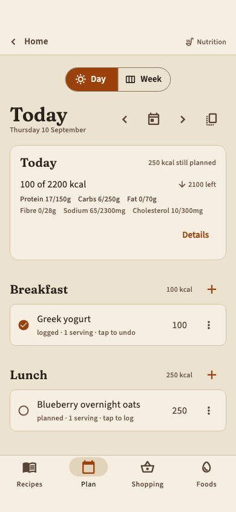
Today — dark theme
Same fixture and actual theme tokens.
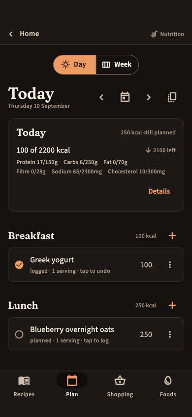
Week — selected-day emphasis
Weekly fixture is empty. Review hierarchy only; zero totals are not a calculation finding.
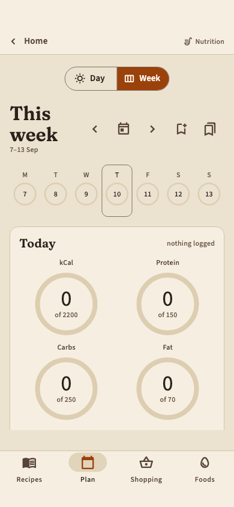
Recipes — phone
Four sample recipes, including intentionally incomplete entries. No photo/icon corpus was supplied.
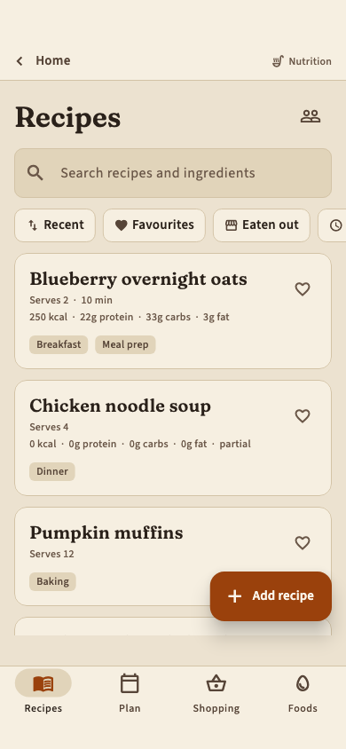
Foods — catalog and actions
Synthetic restaurant rows illustrate catalog density. A connected build may add another label-reading action.
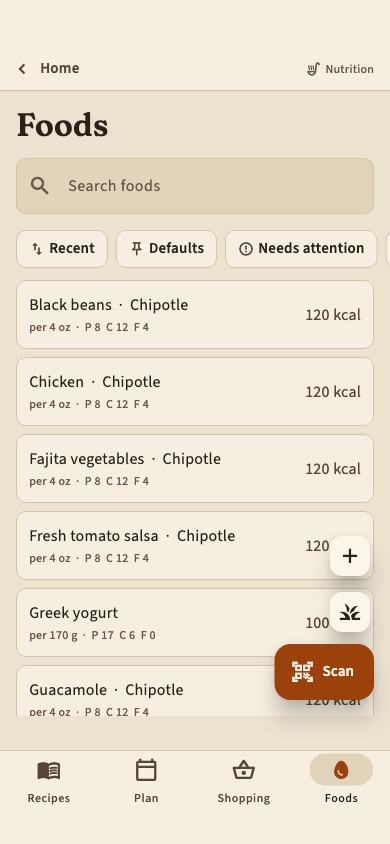
Restaurant selection
One synthetic restaurant; list density and empty states need additional manual evaluation.
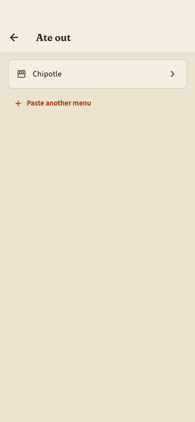
Restaurant menu
Synthetic categories and nutrition, not the official Chipotle seed. No claims about its ordering or nutritional accuracy.
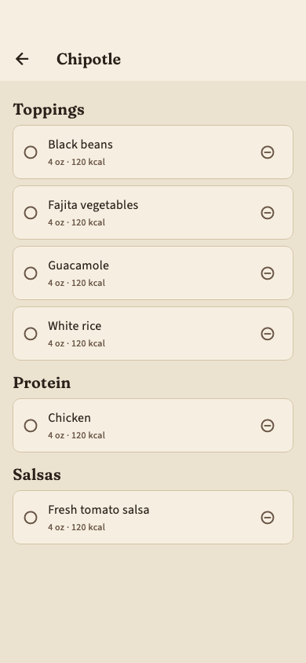
Shopping — populated
Built from the sample plan; AI chat is disabled in the harness.
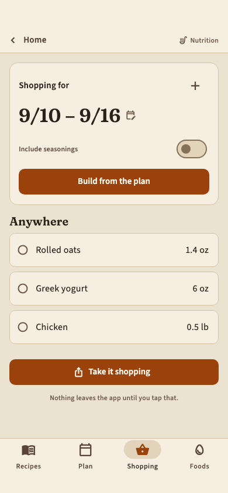
Logging picker
Actual picker before filtering; recent-history fixture is empty.
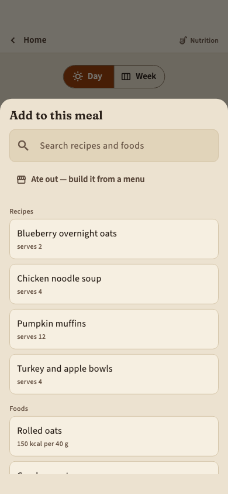
Logging — selected food
Actual 170 g food with a one-serving amount control, after filtering and selecting.
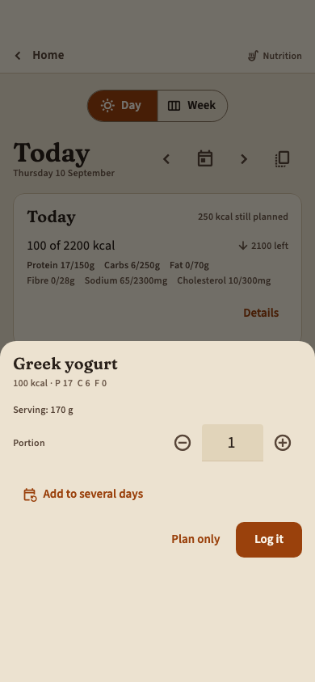
Recipe reader
Synthetic recipe content; assess structure, not recipe accuracy.
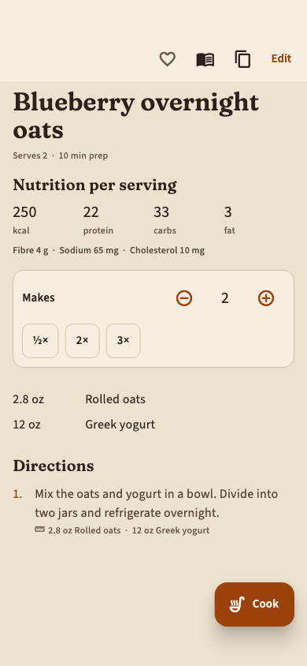
Recipe editor
Sample authored ingredient text plus parsed review; no injected missing-quantity warnings.
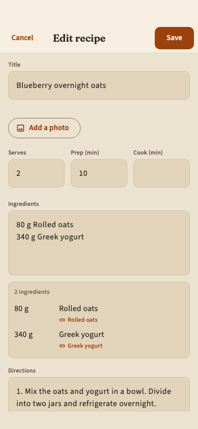
Settings — upper section
Local fake account hides email/reset rows; actual production account adds those rows.
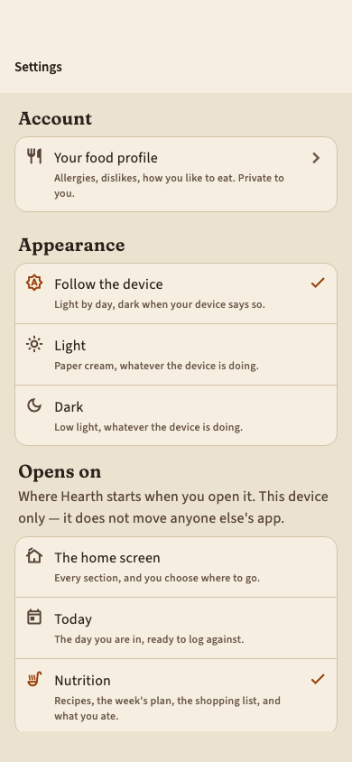
Settings — further down
Same test account, after scrolling.
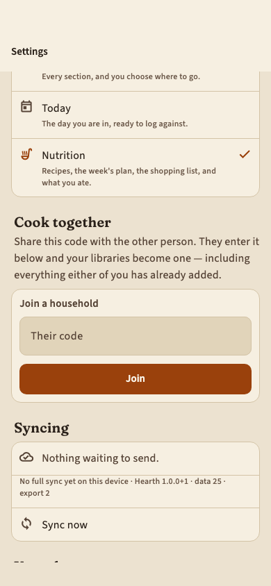
Home
Only Nutrition is available; no working future sections are implied.
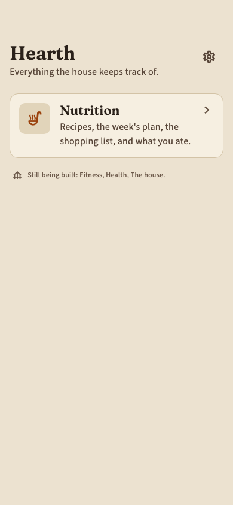
Recipes — desktop
1280×900 test view; real window chrome and desktop keyboard behavior not assessed.
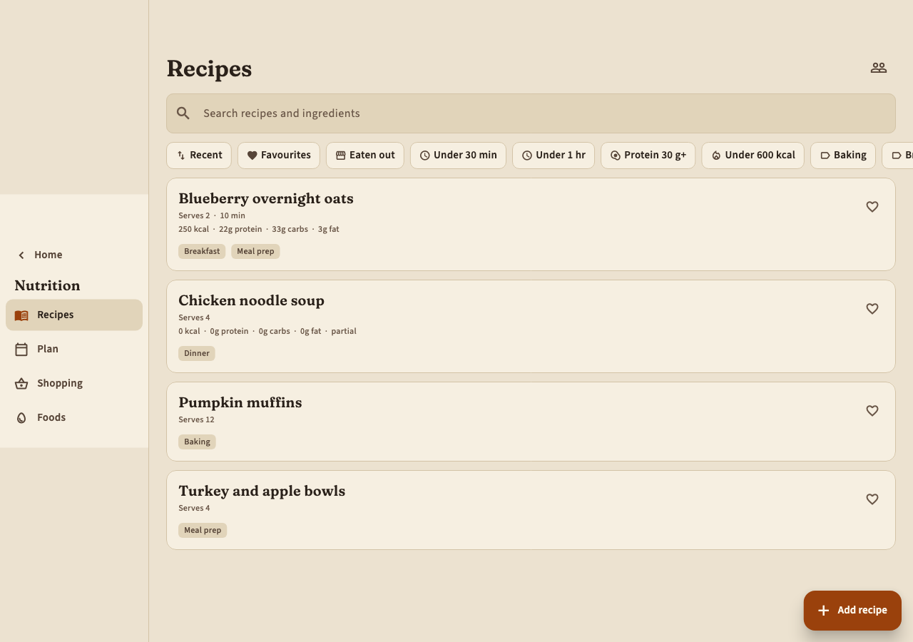